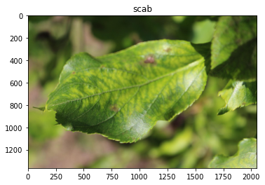
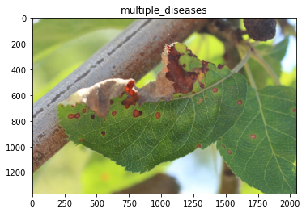
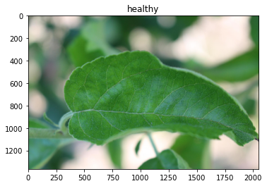
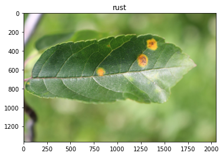
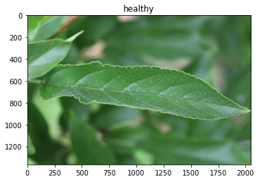
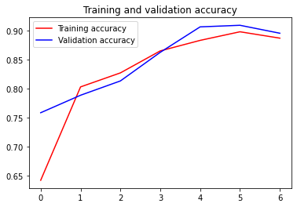

As I continue to practice using tensorflow for image recognition tasks, I thought I would experiment with the Plant Pathology dataset on Kaggle. Like MNIST, this is an image recognition challenge. But in contrast to the simplicity of MNIST, this challenge is about making “fine-grained” visual discriminations. The images are larger and in RGB color, and the features are smaller and more nuanced.
I ran into a few challenges here because the task was so compute intensive. The first challenge was getting tensorflow setup and working with my ultrabook’s GPU instead of the CPU. This was an important step to speed up how quickly I could iterate on models. The second challenge was getting past the initial poor performance of a custom convolutional neural network. I noticed that some Kagglers were using EfficientNet as a base model, so I decided to give that a try.
EfficientNet is a CNN derived from ImageNet with similar accuracy but “an order of magnitude fewer parameters and FLOPS”. In other words, it’s a really efficient drop-in replacement for ImageNet. Once I added this as a base model, I quickly reached high validation accuracy in relatively few epochs.
I’m starting to understand better the value of training these models with lots of compute power. My ultrabook’s GPU only has 4GB memory, which imposed a significant limitation on the batch size and image size that I could train the model with. In comparison to this, when I used a GPU-powered notebook on Kaggle that has 15GB of GPU memory, I was able to train on batch sizes and image sizes almost twice as large, which allowed the model to reach higher validation accuracy.
Using the code below, I was able to reach 91% validation accuracy. With large batch and image size settings on Kaggle, this model reached 94% test accuracy (see here).
Read in data/libraries
# Download data from Kaggle
#!kaggle competitions download -c plant-pathology-2020-fgvc7
import pandas as pd
import numpy as np
train = pd.read_csv('train.csv')
test = pd.read_csv('test.csv')
# Append ".jpg" to make things easier later
train['image_id'] = train['image_id'] + '.jpg'
test['image_id'] = test['image_id'] + '.jpg'
Check devices available. Hopefully we see a GPU :)
import tensorflow as tf
# Check devices
tf.config.list_physical_devices(None)
[PhysicalDevice(name='/physical_device:CPU:0', device_type='CPU'),
PhysicalDevice(name='/physical_device:GPU:0', device_type='GPU')]
train.head()
| image_id | healthy | multiple_diseases | rust | scab | |
|---|---|---|---|---|---|
| 0 | Train_0.jpg | 0 | 0 | 0 | 1 |
| 1 | Train_1.jpg | 0 | 1 | 0 | 0 |
| 2 | Train_2.jpg | 1 | 0 | 0 | 0 |
| 3 | Train_3.jpg | 0 | 0 | 1 | 0 |
| 4 | Train_4.jpg | 1 | 0 | 0 | 0 |
Let’s take a look at some of these images.
from matplotlib import pyplot as plt
from matplotlib import image as mpimg
IMG_PATH = 'images/'
for i in range(5):
plt.imshow(mpimg.imread(IMG_PATH + train.iloc[i,:]['image_id']))
if train.iloc[i,:]['healthy'] == 1:
plt.title('healthy')
elif train.iloc[i,:]['multiple_diseases'] == 1:
plt.title('multiple_diseases')
elif train.iloc[i,:]['rust'] == 1:
plt.title('rust')
else:
plt.title('scab')
plt.show()





Model with EfficientNet Transfer Learning
Now we’ll train a model using EfficientNet transfer learning.
For this model, we will use the following:
- A variety of image augmentations
- A ModelCheckpoint callback, so we can load the best model at the end
- ReduceLROnPlateau to reduce the learning rate when the training gets stuck
- SigmoidFocalCrossEntropy loss function, which is good for imbalanced classes
- 128x128 image sizes, because my GPU only has 4GB of memory :)
from sklearn.model_selection import train_test_split
# Training-validation split
training, validation = train_test_split(train,
test_size = 0.2,
random_state = 42)
from tensorflow.keras.preprocessing.image import ImageDataGenerator
SIZE = 128
BATCH = 16
TARGETS = ['healthy','multiple_diseases','rust','scab']
# image augmentations
image_gen = ImageDataGenerator(rescale=1./255,
rotation_range=20,
width_shift_range=0.2,
height_shift_range=0.2,
zoom_range=0.2,
brightness_range=[0.5, 1.5],
horizontal_flip=True,
vertical_flip=True)
# flow_from_dataframe generators
train_generator = image_gen\
.flow_from_dataframe(train,
directory=IMG_PATH,
target_size=(SIZE, SIZE),
x_col="image_id",
y_col=TARGETS,
class_mode='raw',
shuffle=False,
batch_size=BATCH)
validation_generator = image_gen\
.flow_from_dataframe(validation,
directory=IMG_PATH,
target_size=(SIZE, SIZE),
x_col="image_id",
y_col=TARGETS,
class_mode='raw',
shuffle=False,
batch_size=BATCH)
test_generator = image_gen\
.flow_from_dataframe(test,
directory=IMG_PATH,
target_size=(SIZE, SIZE),
x_col="image_id",
y_col=None,
class_mode=None,
shuffle=False,
batch_size=BATCH)
Found 1821 validated image filenames.
Found 365 validated image filenames.
Found 1821 validated image filenames.
import efficientnet.keras as efn
import tensorflow_addons as tfa
from tensorflow.keras.callbacks import Callback
from keras.models import Model
from keras.layers import Dense, GlobalAveragePooling2D
from keras.callbacks import ReduceLROnPlateau, ModelCheckpoint
from keras.optimizers import Adadelta
# Callbacks
## Keep the best model
mc = ModelCheckpoint('model.hdf5', save_best_only=True, verbose=0, monitor='val_loss', mode='min')
## Reduce learning rate if it gets stuck in a plateau
rlr = ReduceLROnPlateau(monitor='val_loss', factor=0.3, patience=3, min_lr=0.000001, verbose=1)
# Model
## Define the base model with EfficientNet weights
model = efn.EfficientNetB4(weights = 'imagenet',
include_top = False,
input_shape = (SIZE, SIZE, 3))
## Output layer
x = model.output
x = GlobalAveragePooling2D()(x)
x = Dense(128, activation="relu")(x)
x = Dense(64, activation="relu")(x)
predictions = Dense(4, activation="softmax")(x)
## Compile and run
model = Model(inputs=model.input, outputs=predictions)
model.compile(optimizer='adam',
loss=tfa.losses.SigmoidFocalCrossEntropy(),
metrics=['accuracy'])
model_history = model.fit(train_generator,
validation_data=validation_generator,
steps_per_epoch=train_generator.n/BATCH,
validation_steps=validation_generator.n/BATCH,
epochs=7,
verbose=1,
callbacks = [rlr, mc])
Epoch 1/7
114/113 [==============================] - 96s 844ms/step - loss: 0.1770 - accuracy: 0.6425 - val_loss: 0.2638 - val_accuracy: 0.7589
Epoch 2/7
114/113 [==============================] - 68s 595ms/step - loss: 0.1193 - accuracy: 0.8034 - val_loss: 0.1677 - val_accuracy: 0.7890
Epoch 3/7
114/113 [==============================] - 68s 597ms/step - loss: 0.1116 - accuracy: 0.8276 - val_loss: 0.1171 - val_accuracy: 0.8137
Epoch 4/7
114/113 [==============================] - 68s 597ms/step - loss: 0.0851 - accuracy: 0.8655 - val_loss: 0.1628 - val_accuracy: 0.8630
Epoch 5/7
114/113 [==============================] - 69s 601ms/step - loss: 0.0758 - accuracy: 0.8836 - val_loss: 0.0551 - val_accuracy: 0.9068
Epoch 6/7
114/113 [==============================] - 68s 600ms/step - loss: 0.0724 - accuracy: 0.8984 - val_loss: 0.0455 - val_accuracy: 0.9096
Epoch 7/7
114/113 [==============================] - 69s 602ms/step - loss: 0.0714 - accuracy: 0.8874 - val_loss: 0.0827 - val_accuracy: 0.8959
# Load best model
#model.load_weights("model.hdf5")
# Plot training and validation accuracy
acc = model_history.history['accuracy']
val_acc = model_history.history['val_accuracy']
loss = model_history.history['loss']
val_loss = model_history.history['val_loss']
epochs = range(len(acc))
plt.plot(epochs, acc, 'r', label='Training accuracy')
plt.plot(epochs, val_acc, 'b', label='Validation accuracy')
plt.title('Training and validation accuracy')
plt.legend()
plt.figure()
<Figure size 432x288 with 0 Axes>

<Figure size 432x288 with 0 Axes>
Make predictions
# Make predictions
preds = model.predict(test_generator, steps=test_generator.n/BATCH)
Prepare submission
# Make submission
sample_sub = pd.read_csv('sample_submission.csv')
submission = pd.DataFrame({'image_id': sample_sub['image_id'],
'healthy': preds[:,0],
'multiple_diseases': preds[:,1],
'rust': preds[:,2],
'scab': preds[:,3]
})
submission.to_csv("submission.csv", index=False)
submission.head()
| image_id | healthy | multiple_diseases | rust | scab | |
|---|---|---|---|---|---|
| 0 | Test_0 | 0.092860 | 0.169678 | 0.656923 | 0.080539 |
| 1 | Test_1 | 0.111859 | 0.198063 | 0.606325 | 0.083752 |
| 2 | Test_2 | 0.026520 | 0.044308 | 0.003016 | 0.926157 |
| 3 | Test_3 | 0.604854 | 0.147050 | 0.111277 | 0.136820 |
| 4 | Test_4 | 0.078862 | 0.118420 | 0.750966 | 0.051751 |